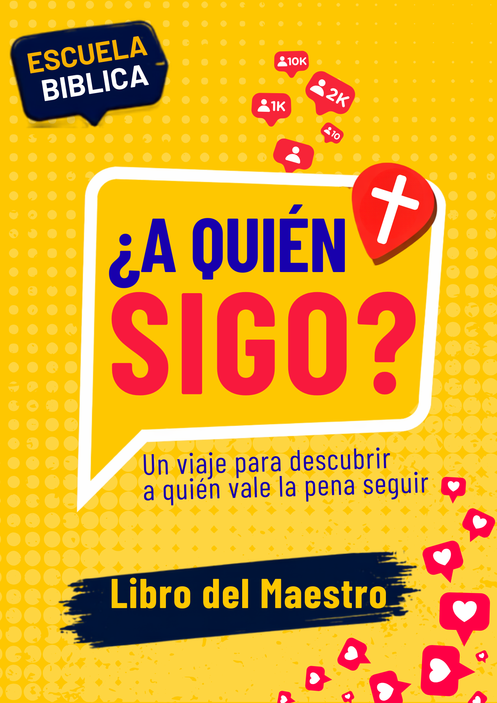

Material descargable
Descargá cada recurso de forma individual o accedé a la carpeta de música.
Un viaje para descubrir a quién vale la pena seguir. Material cristiano infantil con lecciones, actividades, cantos y recursos descargables.
Descargar material“¿A Quién Sigo?” ayuda a niños y preadolescentes a reflexionar sobre sus influencias, decisiones y fe, descubriendo que seguir a Jesús es la mejor decisión.
Ideal para Escuela Bíblica Dominical, clases especiales, campamentos, grupos infantiles y ministerios de la ventana 4/14.

Recursos listos para enseñar con propósito, creatividad y aplicación bíblica.
Historias bíblicas conectadas con decisiones reales.
Juegos y rompehielos para aprender participando.
Actividades creativas para reforzar cada enseñanza.
Canciones para acompañar el programa y motivar a los niños.
Descargá cada recurso de forma individual o accedé a la carpeta de música.
Descargá el material, compartilo con tu equipo y comenzá este viaje para ayudar a los niños a seguir a Jesús.
Ver descargas